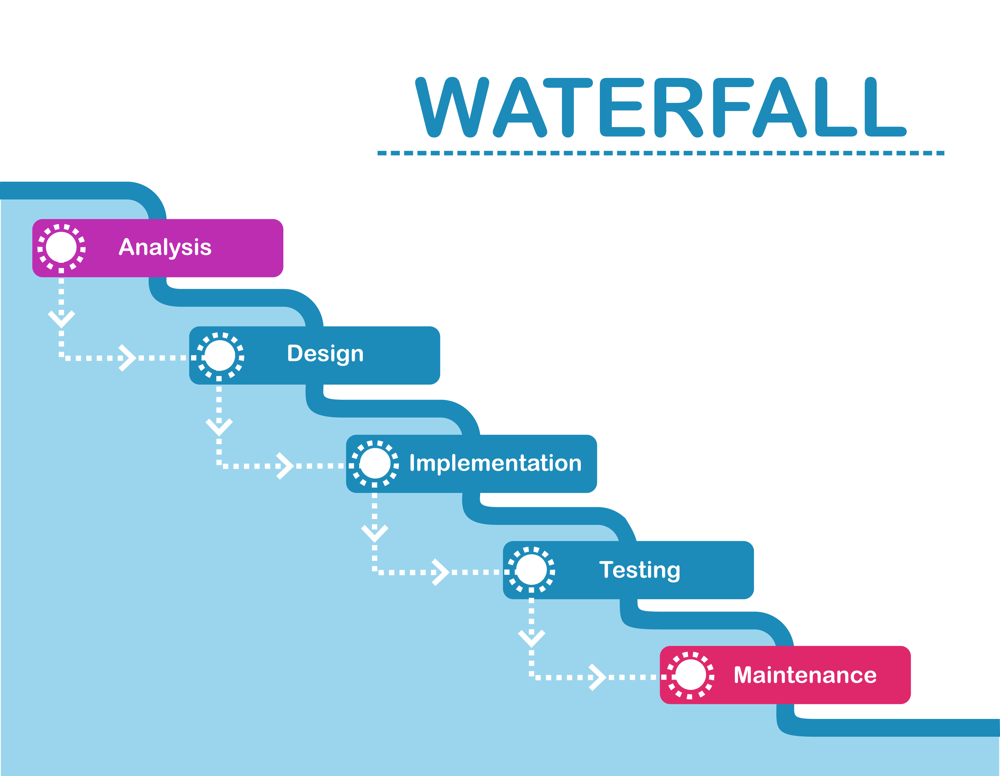

Waterfall

- Sequential phases: Requirements → Design → Build → Test → Deploy
- Works best when requirements are clear, fixed, and well-documented
- Heavy up-front planning; late feedback
- Changes are costly once development has started
Agile

- Iterative & incremental development in short sprints
- Prioritizes customer collaboration and ability to adapt to change
- Continuous feedback through frequent demos and releases
- Delivers working software early and often
Scrum

- Roles: Product Owner, Scrum Master, Developers
- Artifacts: Product Backlog, Sprint Backlog, Increment
- Events: Sprint Planning, Daily Scrum, Review, Retrospective
- Events: Sprint Planning, Daily Scrum, Review, Retrospective